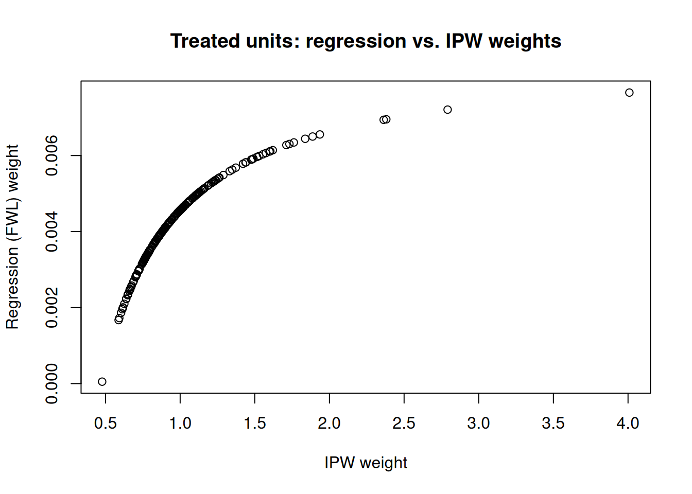

Chad Hazlett and Tanvi Shinkre’s paper “Demystifying and avoiding the OLS “weighting problem”: Unmodeled heterogeneity and straightforward solutions” has demystified OLS weights for me.
When we have unconfoundedness, that is, we assume there is no unobserved confounders, we usually run a linear regression of \(Y\) on \(D\) and \(X\), where \(D\) is the treatment variable and \(X\) is the covariates. We know in fact the unconfoundedness actually is only true for each level of \(X\). If \(X\) is low dimensional and discrete, then it’s possible to stratify and basically calculate the ATE with g-formula. However, usually we just do a linear regression \[ Y = \alpha + \beta D + \gamma X + \epsilon\] and claim we have controlled for \(X\), especially when \(X\) is high-dimensional or continuous. At least we claim it’s a linear approximation of the truth. But, how bad is it?
Suppose we are interested in the ATE of \(D\) on \(Y\). Say we have discrete variables \(X\). Under unconfoundedness, the ATE is
This is basically the g-formula, or regression adjustment formula. We compute the DIM (difference in means) between treated and control for each strata \(X=x\), then the weighted average is the ATE, with \(\hat P(X=x)\) as weights.
If we have high dimensional \(X\), we usually do \[ Y = \beta_0 + \beta_1 X + \delta_{reg} D + \epsilon \]
We would hope \(\delta_{reg}\) is close to \(\delta_{ATE}\), but we are not sure.
OLS coefficients are:
\[ \hat \beta = (Z'Z)^{-1} Z'y \]
Here I use \(Z\) to represent all regressors. Each coefficient is a weighted sum of the outcome,
Here \(\hat d(X_i) = \hat p(D_i=1|X_i)\) which is the predicted value of linear regression of \(D\) on \(X\). The numerator is the covariance between \(Y\) and residualized \(D\), the denominator is the variance of the residualized \(D\). Note that the original FWL would have residualized \(Y\) here, but it turns out it works the same with the original \(Y\).
Note for the denominator, it’s a constant, basically to scale the sum of weights to be 1. The numerator for treated units are \(1-\hat d(X_i)\), for control units it’s \(-\hat d(X_i)\) (negative). It is similar to IPW weights, which are \(1/\hat d(X_i)\) for treated and \(1/(1-\hat d(X_i))\) for control. These two sets of weights go the same direction. For the treated, the higher probability of being treated, the lower weight; for the control, the higher probability of being treated, the larger the magnitude of the (negative) weight.
If these weights are the same as the IPW weights, then we’ll get \(\tau_{reg}=\tau_{ATE}\). However, they are usually different.
Another way to write this as weighted difference in means:
where, with \(c = \sum (D_i - \hat d(X_i))^2\), the per-arm weights are \(\tilde \omega_i = (1-\hat d(X_i))/c\) for treated units (\(D_i=1\)) and \(\tilde \omega_i = -\hat d(X_i)/c\) for control units (\(D_i=0\))
Because \(\hat d(X_i)\) is from a linear probability model, it’s possible that it’s not between 0 and 1. In that case, we can have negative weights. The negative weights could mean the observations do not have a match in the other group. For example, \(\hat d(X_i) > 1\) will cause the weight to be negative if it’s a treated unit. That means this unit is more like treated units than any control units. In other words, there is no match in the control group. Likewise for control units with \(\hat d(X_i) < 0\).
The worst thing is that we don’t know which observations have negative weights, unless we look further and actually run a regression of \(D\) on \(X\). If we do that, we are doing similar things as in IPW or matching. If we simply do a linear regression, it’s like a black box. We have no idea how bad some negative weights are. We are relying on extrapolation with regression model like this. Even if there is no matched units, we are extrapolating based on linearity.
Therefore, \(\hat \tau_{reg}\) is another weighted average of the outcome, which is different from the \(\tau_{ATE}\), potentially. In addition, for \(\tau_{ATE}\), we can calculate the difference in means for that strata, given we have observations from both treated and controls. In the case of linear regression, we might have units that should not be included in the calculation and we don’t know about it.
4.2 Strata level weights
Angrist (1998, Econometrica) has the strata-wise weights for OLS:
this shows that different from ATE, these weights are \(\hat d(x) (1-\hat d(x)) \hat P(X=x)\). The stratas are weighted not only by \(P(X_i=x)\), but also by the variance of treatment status. When \(\hat d(X_i)\) is close to .5, the weight is the largest.
If there is no treatment effect heterogeneity, then it does not matter how you weight. When there is treatment effect heterogeneity, this estimator could be very different from ATE.
Hazlett and Shinkre show that Angrist’s estimator is a special case of a general case. It is only valid when the probability of treatment is linear in X. When you have discrete X and have a saturated model in X, then it’s linear in X. Hazlett and Shinkre showed a more general formula for the weights, but here we assume Angrist’s formula is correct, basically assuming linearity in modeling probability of treatment.
4.3 Recommended estimation approaches
Under no effect heterogeneity and linearity of \(Y\) on \(D\) and \(X\), namely, \(E[Y|X, D]= \beta_0 + \beta_1 X + \beta_2 D\), there is no problem with a regression of \(Y\) on \(D\) and \(X\).
If this is not true, then we’ll need to be more flexible on the specification to make OLS estimators close to ATE.
Hazlett and Shinkre suggested relaxing the assumption to separate linearity. Basically allowing different intercepts for \(Y(0)\) and \(Y(1)\).
If that is true, then the following estimators are unbiased: interaction, imputation, g-computation, and stratification.
Interaction estimator is the Lin (2013, Annals of Applied Statistics) estimator, basically running a regression of \(Y\) on \(D\), \(\tilde X\), and \(D*\tilde X\). \(\tilde X\) is the demeaned \(X\). The coefficient of \(D\) is the ATE.
Imputation is to run separate regressions for treatment and control group, then use the results to predict outcomes for the other group. The ATE is the difference in the predicted outcomes. It turns out the imputation estimator is the same as the interaction estimator.
Stratification and g-computation work when \(X\) is discrete. Basically get the difference in means for each strata and weight by the probability of strata.
The above mentioned estimators all depend on the linearity assumption. If that is not the case, then we can use matching, such as “mean balancing” matching.
Nonparametric estimation is another option if the linearity assumption fails.
4.4 A worked example
Let’s make the regression weights \(\omega_i\) concrete and compare them to IPW weights \(1/\hat d(X_i)\) (treated) and \(1/(1-\hat d(X_i))\) (control).
library(dplyr)set.seed(1)n<-500X<-rnorm(n)d_prob<-plogis(0.5*X)D<-rbinom(n, 1, d_prob)Y<-1+2*D+1.5*X+rnorm(n)dat<-data.frame(Y, D, X)# Regression-implied weights via the FWL residualization of D on X.d_hat<-fitted(lm(D~X, data =dat))resid_D<-dat$D-d_hatomega_reg<-resid_D/sum(resid_D^2)# IPW weights (Horvitz-Thompson), using the same linear-probability d_hat# purely for comparability with the regression weights above.ipw<-ifelse(dat$D==1, 1/d_hat, 1/(1-d_hat))ipw<-ipw/sum(ipw[dat$D==1])*sum(dat$D==1)# normalize within arm for comparabilitytau_reg<-sum(omega_reg*dat$Y)tau_lm<-coef(lm(Y~D+X, data =dat))["D"]data.frame(tau_reg_from_weights =tau_reg, tau_from_lm_coef =tau_lm)
tau_reg_from_weights tau_from_lm_coef
D 2.084644 2.084644
The two are numerically identical (up to floating point), confirming \(\hat\tau_{reg} = \sum \omega_i Y_i\). Plotting omega_reg against ipw for treated and control units separately shows the two weighting schemes move in the same direction but are not proportional — confirming that \(\hat\tau_{reg} \neq \hat\tau_{ATE}\) in general, as discussed above.
plot(ipw[dat$D==1], omega_reg[dat$D==1], xlab ="IPW weight", ylab ="Regression (FWL) weight", main ="Treated units: regression vs. IPW weights")

Source Code
---title: "Weights in OLS in causal inference"date: "2025-01-16"---## Unit level weights for OLSChad Hazlett and Tanvi Shinkre's paper "Demystifying and avoiding the OLS “weighting problem”:Unmodeled heterogeneity and straightforward solutions" has demystified OLS weights for me.When we have unconfoundedness, that is, we assume there is no unobserved confounders, we usually run a linear regression of $Y$ on $D$ and $X$, where $D$ is the treatment variable and $X$ is the covariates. We know in fact the unconfoundedness actually is only true for each level of $X$. If $X$ is low dimensional and discrete, then it's possible to stratify and basically calculate the ATE with g-formula. However, usually we just do a linear regression$$ Y = \alpha + \beta D + \gamma X + \epsilon$$and claim we have controlled for $X$, especially when $X$ is high-dimensional or continuous. At least we claim it's a linear approximation of the truth. But, how bad is it?Suppose we are interested in the ATE of $D$ on $Y$. Say we have discrete variables $X$. Under unconfoundedness, the ATE is$$\begin{align} \tau_{ATE} &= \sum E[Y(1) - Y(0) | X = x] P(X = x) \\ &= \sum (E[Y|D=1, X=x]- E[Y|D=0, X=x]) P(X=x) \\ &= \sum DIM_x P(X=x) \\\end{align}$$This is basically the g-formula, or regression adjustment formula. We compute the DIM (difference in means) between treated and control for each strata $X=x$, then the weighted average is the ATE, with $\hat P(X=x)$ as weights.If we have high dimensional $X$, we usually do$$ Y = \beta_0 + \beta_1 X + \delta_{reg} D + \epsilon $$We would hope $\delta_{reg}$ is close to $\delta_{ATE}$, but we are not sure.OLS coefficients are:$$ \hat \beta = (Z'Z)^{-1} Z'y $$Here I use $Z$ to represent all regressors. Each coefficient is a weighted sum of the outcome,$$ \hat \tau_{reg} = \sum \omega_i Y_i $$By FWL theorem,$$ \hat \tau_{reg} = \frac{\sum Y_i (D_i - \hat d(X_i)) }{\sum (D_i - \hat d(X_i))^2} $$Here $\hat d(X_i) = \hat p(D_i=1|X_i)$ which is the predicted value of linear regression of $D$ on $X$. The numerator is the covariance between $Y$ and residualized $D$, the denominator is the variance of the residualized $D$. Note that the original FWL would have residualized $Y$ here, but it turns out it works the same with the original $Y$.Therefore the weights are$$\begin{align}\omega_i &= \frac{D_i - \hat d(X_i)}{\sum (D_i - \hat d(X_i))^2} \\\end{align}$$Note for the denominator, it's a constant, basically to scale the sum of weights to be 1. The numerator for treated units are $1-\hat d(X_i)$, for control units it's $-\hat d(X_i)$ (negative). It is similar to IPW weights, which are $1/\hat d(X_i)$ for treated and $1/(1-\hat d(X_i))$ for control. These two sets of weights go the same direction. For the treated, the higher probability of being treated, the lower weight; for the control, the higher probability of being treated, the larger the magnitude of the (negative) weight.If these weights are the same as the IPW weights, then we'll get $\tau_{reg}=\tau_{ATE}$. However, they are usually different.Another way to write this as weighted difference in means:$$ \hat \tau_{wdim} = \sum \omega_i Y_i = \sum_{i:D=1} \tilde \omega_i Y_i + \sum_{i:D=0} \tilde \omega_i Y_i $$where, with $c = \sum (D_i - \hat d(X_i))^2$, the per-arm weights are $\tilde \omega_i = (1-\hat d(X_i))/c$ for treated units ($D_i=1$) and $\tilde \omega_i = -\hat d(X_i)/c$ for control units ($D_i=0$)Because $\hat d(X_i)$ is from a linear probability model, it's possible that it's not between 0 and 1. In that case, we can have negative weights. The negative weights could mean the observations do not have a match in the other group. For example, $\hat d(X_i) > 1$ will cause the weight to be negative if it's a treated unit. That means this unit is more like treated units than any control units. In other words, there is no match in the control group. Likewise for control units with $\hat d(X_i) < 0$.The worst thing is that we don't know which observations have negative weights, unless we look further and actually run a regression of $D$ on $X$. If we do that, we are doing similar things as in IPW or matching. If we simply do a linear regression, it's like a black box. We have no idea how bad some negative weights are. We are relying on extrapolation with regression model like this. Even if there is no matched units, we are extrapolating based on linearity.Therefore, $\hat \tau_{reg}$ is another weighted average of the outcome, which is different from the $\tau_{ATE}$, potentially. In addition, for $\tau_{ATE}$, we can calculate the difference in means for that strata, given we have observations from both treated and controls. In the case of linear regression, we might have units that should not be included in the calculation and we don't know about it.## Strata level weightsAngrist ([1998](https://doi.org/10.2307/2999578), *Econometrica*) has the strata-wise weights for OLS:$$ \hat \tau_{reg} = \frac{\sum_x \hat \tau_x \hat d(x) (1-\hat d(x)) \hat P(X=x)}{\sum_x \hat d(x) (1-\hat d(x)) \hat P(X=x)} $$this shows that different from ATE, these weights are $\hat d(x) (1-\hat d(x)) \hat P(X=x)$. The stratas are weighted not only by $P(X_i=x)$, but also by the variance of treatment status. When $\hat d(X_i)$ is close to .5, the weight is the largest.If there is no treatment effect heterogeneity, then it does not matter how you weight. When there is treatment effect heterogeneity, this estimator could be very different from ATE.Hazlett and Shinkre show that Angrist's estimator is a special case of a general case. It is only valid when the probability of treatment is linear in X. When you have discrete X and have a saturated model in X, then it's linear in X. Hazlett and Shinkre showed a more general formula for the weights, but here we assume Angrist's formula is correct, basically assuming linearity in modeling probability of treatment.## Recommended estimation approachesUnder no effect heterogeneity and linearity of $Y$ on $D$ and $X$, namely, $E[Y|X, D]= \beta_0 + \beta_1 X + \beta_2 D$, there is no problem with a regression of $Y$ on $D$ and $X$.If this is not true, then we'll need to be more flexible on the specification to make OLS estimators close to ATE.Hazlett and Shinkre suggested relaxing the assumption to separate linearity. Basically allowing different intercepts for $Y(0)$ and $Y(1)$.If that is true, then the following estimators are unbiased: interaction, imputation, g-computation, and stratification.Interaction estimator is the Lin ([2013](https://doi.org/10.1214/12-AOAS583), *Annals of Applied Statistics*) estimator, basically running a regression of $Y$ on $D$, $\tilde X$, and $D*\tilde X$. $\tilde X$ is the demeaned $X$. The coefficient of $D$ is the ATE.Imputation is to run separate regressions for treatment and control group, then use the results to predict outcomes for the other group. The ATE is the difference in the predicted outcomes. It turns out the imputation estimator is the same as the interaction estimator.Stratification and g-computation work when $X$ is discrete. Basically get the difference in means for each strata and weight by the probability of strata.The above mentioned estimators all depend on the linearity assumption. If that is not the case, then we can use matching, such as "mean balancing" matching.Nonparametric estimation is another option if the linearity assumption fails.## A worked exampleLet's make the regression weights $\omega_i$ concrete and compare them to IPW weights $1/\hat d(X_i)$ (treated) and $1/(1-\hat d(X_i))$ (control).```{r}#| label: fwl-weights-example#| cache: true#| warning: false#| message: falselibrary(dplyr)set.seed(1)n <-500X <-rnorm(n)d_prob <-plogis(0.5* X)D <-rbinom(n, 1, d_prob)Y <-1+2* D +1.5* X +rnorm(n)dat <-data.frame(Y, D, X)# Regression-implied weights via the FWL residualization of D on X.d_hat <-fitted(lm(D ~ X, data = dat))resid_D <- dat$D - d_hatomega_reg <- resid_D /sum(resid_D^2)# IPW weights (Horvitz-Thompson), using the same linear-probability d_hat# purely for comparability with the regression weights above.ipw <-ifelse(dat$D ==1, 1/ d_hat, 1/ (1- d_hat))ipw <- ipw /sum(ipw[dat$D ==1]) *sum(dat$D ==1) # normalize within arm for comparabilitytau_reg <-sum(omega_reg * dat$Y)tau_lm <-coef(lm(Y ~ D + X, data = dat))["D"]data.frame(tau_reg_from_weights = tau_reg, tau_from_lm_coef = tau_lm)```The two are numerically identical (up to floating point), confirming $\hat\tau_{reg} = \sum \omega_i Y_i$. Plotting `omega_reg` against `ipw` for treated and control units separately shows the two weighting schemes move in the same direction but are not proportional — confirming that $\hat\tau_{reg} \neq \hat\tau_{ATE}$ in general, as discussed above.```{r}#| label: fwl-weights-plot#| cache: true#| warning: false#| message: falseplot(ipw[dat$D ==1], omega_reg[dat$D ==1],xlab ="IPW weight", ylab ="Regression (FWL) weight",main ="Treated units: regression vs. IPW weights")```